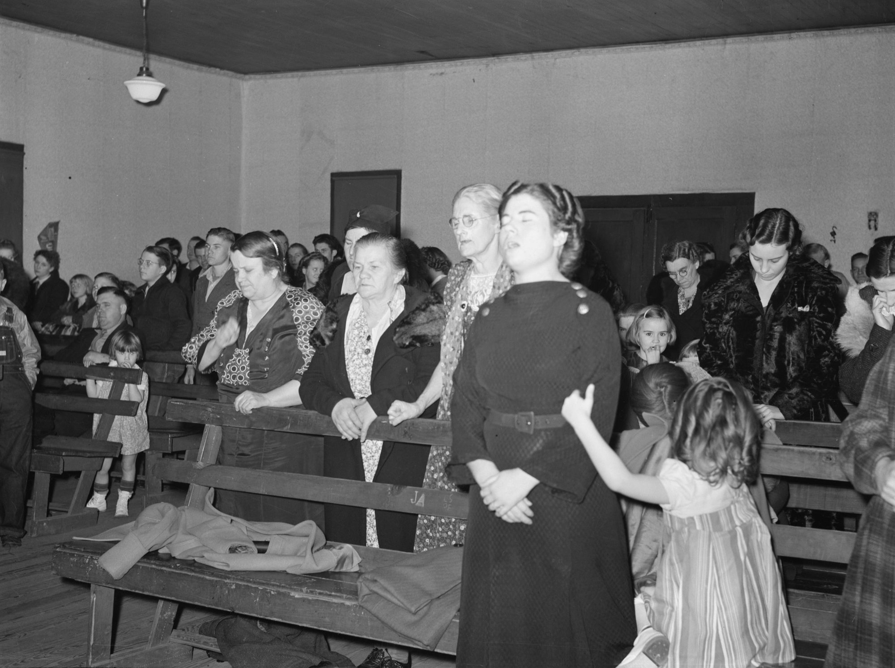
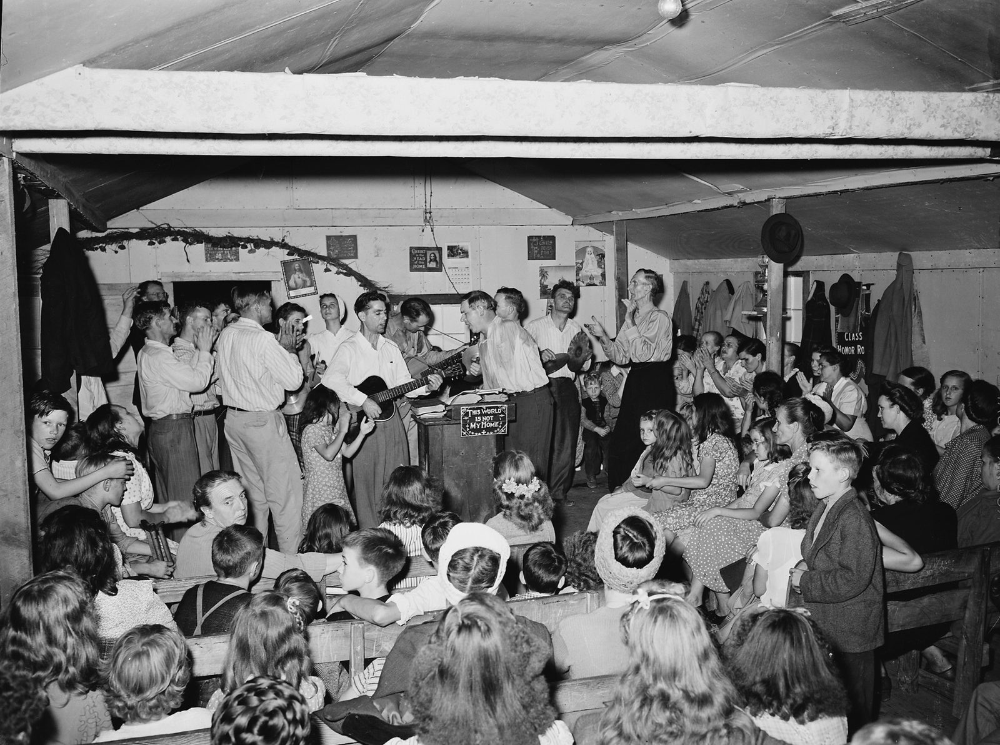

Один сосредоточенный человек или весь зал?
Одни говорят: я просто буду поклоняться, а кто захочет, присоединится. Если я соединюсь с Богом, зал это почувствует. Другие говорят: сосредоточены должны быть все, а кто отвлекает зал, пусть замолчит или выйдет. Эта страница читает обе позиции в свете Писания и двух тысяч лет христианских собраний и приходит к благодати.
«Все они единодушно пребывали в молитве. С ними были и несколько женщин, а также мать Иисуса Мария и Его братья».
Деян. 1:14. «Единодушно» по-гречески — homothumadon, одним духом.
«Как хорошо и как приятно жить братьям вместе! Это — как налитое на голову драгоценное масло, стекающее на бороду».
Пс. 132:1–2. В библейском псалме о единстве единство изливается, а не строится.
Два способа войти в зал
Сначала простое, потом то, что разделяет церкви.
Есть разница между тем, чтобы отдать Богу своё внимание, и тем, чтобы отдать Ему его остатки.
Отвести время, унести телефон в другую комнату, прийти до первой песни, прийти, чтобы быть с Ним, а не просто рядом: всё это не религия, которая пытается что-то заработать. Так выглядит внимание к человеку. Никто не назовёт законничеством, если ты кладёшь телефон экраном вниз за ужином с тем, кого любишь.
Есть и настоящая практика поклонения посреди всех дел. Монастырский повар в Париже, брат Лаврентий, находил Бога среди кастрюль и сковородок так же верно, как на коленях, и «Внутренняя комната» рассказывает эту историю. Но Лаврентий научился этому в отведённые часы. Кухня была тем, куда это пришло потом, а не тем, с чего началось. «Я буду поклоняться посреди всего, как получится, я не особо слежу» — это другое. Это не присутствие, перенесённое в работу. Это внимание, которое так и не было отдано.
Значит, первый вопрос решён: отводи время. Вопрос труднее начинается, когда ты не один.
Об этом на сайте уже есть. Поклонение посреди работы и комната с закрытой дверью — тема «Внутренней комнаты». Эта страница — о другой половине: о зале с открытой дверью, где есть другие люди.
«Я просто буду поклоняться».
Я буду поклоняться. Кто захочет присоединиться, присоединится. Если я соединюсь с Богом, атмосфера изменится.
Звучит смиренно, и часто так и есть. Эта позиция не ждёт зала, который может так и не созреть. Её риск тихий: она может превратиться в показ для тех, кто не присоединился, и в молчаливое ожидание, что им следовало бы.
«Мы здесь ради Него».
Если разговариваешь, перестань. Если не можешь, выйди. Когда все вместе сосредоточены, приходит слава.
Эта позиция всерьёз относится к Богу и всерьёз относится к залу. Её риск громче: сосредоточенность становится платой за вход, рассеянные становятся проблемой, а слава начинает звучать как награда.
Под обеими позициями лежит вопрос, на который пытается ответить эта страница.
Достаточно ли одного человека, целиком обращённого к Богу, чтобы изменить зал, или сосредоточены должны быть все?
А под ним — второй вопрос, от которого зависит, как ты слышишь первый. Когда ты сосредотачиваешься на Боге, ты что-то Ему даришь или за что-то Ему платишь?
Оба лагеря в полную силу
Каждый прав в том, о чём забывает другой. Каждый сбивается туда, где это видно другому. Цитаты — их собственные, по документам.
У первого лагеря нет одного основателя. Это чутьё многих команд прославления и многих тихих верующих, а самый цитируемый его учитель — Билл Джонсон из церкви Bethel в Реддинге, Калифорния, который часто говорит о том, чтобы вносить Божье присутствие в зал. Второй лагерь идёт узнаваемой линией: служения исцеления Кэтрин Кульман около 1970 года, Бенни Хинн, которого они сформировали, и Майкл Кулианос, зять Хинна, чьё служение Jesus Image в Орландо проводит долгие воскресные вечерние служения, построенные вокруг ожидания Святого Духа.
Одна поправка перед сравнением. О лагере сосредоточенности часто говорят, что там велят отвлекающим замолчать или выводят их. У Кулианоса мы нашли записанные просьбы и твёрдый взгляд на его служителей порядка: у них «на самом деле есть делегированная власть», а люди, которые их не слушают, проявляют «полную слепоту к Господу и Его Царству». Ни одного сообщения о том, что кого-то вывели, мы не нашли. Его самая ясная просьба к собранию — не выходить во время причастия, с исключениями для детей и нянь. Задокументированный случай, когда людей выводили, — Браунсвиллское пробуждение в Пенсаколе, где, по репортажу 1997 года, служители порядка выпроваживали из зала «слишком восторженных». Громких, а не рассеянных.
Как проверялись цитаты. Цитаты из проповедей Кулианоса и Кульман взяты из расшифровок записей с отметками времени; опубликованные интервью и статьи прочитаны целиком. Где строка держится на памяти одного человека, страница так и говорит. Заметки исследования — в разделе о проверенных утверждениях ниже.
Поклоняйся — и пусть подхватят
Все сосредоточены
То, на чём ты сосредоточен, — то Царство, которое ты осознаёшь, — ты и выпускаешь в атмосферу вокруг себя.
Билл Джонсон, интервью Charisma, 15 августа 2016Вопрос атмосферы для меня очень важен.
То же интервьюМне кажется, мы как Церковь склонны реагировать на тьму, вместо того чтобы откликаться на свет. … Приглашай их туда, вместо того чтобы тревожно пытаться вытащить их из тьмы, как будто мы можем, как будто мы их спаситель.
Стеффани Гретцингер, певица Bethel Music, в интервью Cross Rhythms, 14 ноября 2018. Она говорила о хаотичном мире, а не о служениях, но это позиция лагеря, её словами.Это не порка. Это просьба. … И если целый зал начинает думать об Иисусе, происходят удивительные вещи.
Майкл Кулианос, «Иисус, наш Целитель», воскресное вечернее служение в Jesus Image (2021 или 2022)Если приходишь между делом, тебе не доверят глубин Его славы. … Это не христианский концерт. Это дом Бога Живого.
То же служение, минутой раньше и минутой позжеЯ боюсь огорчить Святого Духа, потому что, когда Святой Дух отходит от меня, я самый обычный человек, какой когда-либо жил.
Кэтрин Кульман, Christianity Today, 20 июля 1973Страх, который их объединяет
Прочитай учителей двух лагерей рядом, и в обоих обнаружится один и тот же страх. Кульман в записанной проповеди: «Я не боюсь ни одного человека, у меня один страх — как бы не огорчить Святого Духа, как бы не ушло это помазание». Кулианос, десятилетия спустя: «Когда эта слава уходит, Его слава, я ни разу не видел, чтобы она вернулась. И это, думаю, с точки зрения служения мой самый большой страх». У Джонсона версия мягче, но мысль та же: что несёшь, то и выпускаешь, так что неси бережно.
Это честный страх, и он идёт от любви. Но именно здесь оба лагеря могут уйти от благодати, потому что он тихо предполагает, что Божье присутствие зависит от соблюдения правильных условий, будь то условия внутри одного поклоняющегося или во всём зале.
И граница, которую они разделяют
Внутри самой линии сосредоточенности правила были мягче своей репутации. Кульман говорила, что «шум — не признак силы», и снова и снова настаивала, что никого не исцелила: «Не пытайтесь дотянуться и коснуться Кэтрин Кульман. Дотянитесь вверх и коснитесь Его» (TIME, 1970). Кулианос с одобрением пересказывает историю о том, как Билл Джонсон сказал Дженн Джонсон, что ей вообще не стоило снимать свою «шляпу поклонения», даже когда она кормила ребёнка. Лагеря ближе друг к другу, чем их последователи, и ближе, чем кажется на бумаге. Билл Джонсон написал предисловие к книге Кулианоса Holy Spirit (2017) и к изданию авторизованной биографии Кульман 2021 года. Стеффани Гретцингер, певица Bethel, звучит в записях поклонения Jesus Image с 2019 по 2025 год.
Самая известная мольба Кульман — «Пожалуйста, не огорчайте Святого Духа. … Он — всё, что у меня есть» — держится на одном очевидце, Бенни Хинне, который писал в 1990 году о служении 1973 года. Хинн добавляет, что ему сказали: «Раньше она никогда такого не делала». Записи не известно.
Единодушие — это сила, а не добродетель
Лука употребляет это слово одиннадцать раз. Четыре из них — о толпе.
Греческое слово — homothumadon. Оно соединяет homo, «тот же», и thumos, слово для страсти или нрава. Оно значит двигаться одной мыслью, одним порывом. Лука употребляет его десять раз в Деяниях, и Павел один раз, в Рим. 15:6. Библия короля Якова переводит его «with one accord», «единодушно», и именно оттуда пришло это выражение; Синодальный перевод тоже говорит «единодушно».
Сначала одна неожиданность. Самое цитируемое «единодушно» из всех — «все они были единодушно вместе» в день Пятидесятницы (Деян. 2:1) — это чтение Библии короля Якова (и Синодального перевода), сделанное по более позднему греческому тексту. В более древних рукописях стоит homou, «вместе»: «все они были вместе». Современные переводы следуют им. Единодушие перед Пятидесятницей никуда не делось, но оно в Деян. 1:14, в десяти днях молитвы, и оно есть во всех текстах.
Вторая неожиданность — в том, у кого оно есть. Пройдись по одиннадцати ниже.
Как это считали. Каждый стих Деяний и Послания к римлянам проверен по греческому Новому Завету SBL и по Textus Receptus Эльзевиров 1624 года — изданию, на котором стоит Библия короля Якова. В первом одиннадцать употреблений, во втором двенадцать; единственная разница — Деян. 2:1.
Одиннадцать
И вариантТак что слово настоящее, и Лука его любит. Церковь единодушно молится, единодушно собирается, единодушно принимает решения, и место сотрясается (Деян. 4:24, 4:31). Но толпа, побившая Стефана камнями, тоже единодушно «бросилась на него» (Деян. 7:57), как и бунт в Эфесе (Деян. 19:29). Единство — это сила. Оно делает зал сильным. А святым единство зала делает то, вокруг чего он един.
В Ветхом Завете для этого есть свои слова, и они говорят одно и то же с трёх сторон.
Трубачи и певцы «звучали в унисон», буквально были как один, «как один голос». Они пели о том, что Бог благ и милость Его навеки, и облако наполнило храм. Это самый сильный текст лагеря сосредоточенности, и он об одном звуке, обращённом к Божьей благости.
Народ собрался, «как один человек», чтобы слушать Закон, и стоял с рассвета до полудня, «и весь народ внимательно слушал». Потом левиты читали народу, «поясняя и истолковывая, чтобы народ мог понимать прочитанное» (8:8). Вниманию помогали, а не требовали его.
Отсюда наше слово «симфония». «Если двое из вас здесь, на земле, согласятся вместе просить о чем-либо, то Мой Небесный Отец непременно сделает для вас все, о чем вы просите». И дальше: «там, где двое или трое собраны вместе во имя Мое, там и Я нахожусь вместе с ними». Согласие важно, а число, которое называет Иисус, маленькое.
Что происходило в зале
Двадцать пять отрывков, разобранных по тому, что на самом деле произошло, и с тем, что каждый из них может и чего не может значить.
Положи группы рядом, и проступит закономерность, о которой обычно не говорит ни один лагерь.
Каждый раз, когда в Библии кого-то выводят из комнаты, это воскрешение мёртвого за закрытой дверью: Елисей с сыном шунамитянки, Иисус с дочерью Иаира, Пётр с Тавитой. Иисус оставил при Себе пятерых; Пётр не оставил никого, а вывел он вдов, которые любили Тавиту, а не сомневающихся. Смысл был в тишине для молитвы, а не в приговоре чьей-то вере.
И каждый раз, когда кому-то на общем богослужении велят замолчать, Иисус встаёт на сторону шума. Толпа шикала на Вартимея, а Иисус остановился ради него. Ученики прогоняли детей, и Он вознегодовал. Священники жаловались на детей, кричавших в храме, и Он ответил им псалмом. Самый рассеянный человек в Новом Завете, Евтих, уснул во время проповеди Павла и выпал из окна третьего этажа. Павел поднял его, вернулся наверх, преломил хлеб и продолжал до рассвета (Деян. 20:9–11). Никто его не отчитал.
И при этом вершины действительно происходят в залах, которые были едины: храмовый хор, звучащий одним голосом, церковь, которая молится как один, пока не сотрясается здание. Верно и то и другое. Вопрос в том, что сделало их едиными.
Как церковь собиралась на самом деле
Двенадцать залов, от синагоги I века до Орландо в воскресный вечер. Для каждого: как собирались, что делали с рассеянностью и считали ли, что сосредоточены должны быть все.
Первое правило было о людях, а не о внимании
Дидахе не допускало того, у кого была неулаженная ссора, а не того, чьи мысли блуждают. Знаменитое единство Гернгута началось с того, что поссорившиеся соседи обнялись по дороге в церковь. Эван Робертс остановил собрание в Мертире из-за двух людей, «не примирившихся друг с другом». Газета Азуза-стрит писала, что Бог не может действовать там, где дьявол может «посеять раздор». Самое древнее христианское чутьё о едином зале — это примирение.
Свобода попросила порядка через несколько месяцев
В 1906 году у Азуза-стрит не было никакой программы, а к январю 1907-го Сеймур уже напоминал: «все должно совершаться пристойно и соответствовать порядку». В Коринфе в I веке было то же самое. И там и там порядок не был врагом Духа. Так люди давали место друг другу.
Искать помеху в людях — кончилось плохо
Когда зал был тихим по общему желанию, это держалось. Когда лидер начинал находить «помехи» в конкретных людях, как Эван Робертс в 1905 году, даже сочувствующий летописец назвал то, что последовало, «весьма несчастливым». Чутьё сосредоточенности безопаснее всего как приглашение и опаснее всего как обвинение.
Достаточно ли одного человека?
Чтобы быть услышанным — да. Чтобы открыть дверь — часто. Чтобы заставить Бога прийти — этого не смог никто и никогда.
Библия отвечает на обе половины вопроса, и отвечает по-разному.
Одного человека достаточно, чтобы быть услышанным.
- Достаточно, чтобы быть услышанным?Да
Анна в Шило. Её губы двигались беззвучно. Священник решил, что она пьяна. Бог услышал её. 1 Цар. 1:12–15
Весь абзац
Одного человека достаточно, чтобы быть услышанным. Анна молилась в Шило так глубоко, что губы её двигались беззвучно, в святилище, которым заправляли продажные священники, и дежурный священник решил, что она пьяна (1 Цар. 1:12–15). Бог услышал её. Состояние зала Ему не помешало, а лидер прочитал её неверно.
- Достаточно, чтобы открыть дверь?Часто
Давид и Саул. Давид играл, и Саулу становилось легче. 1 Цар. 16:23
Павел и Сила. Они пели в полночь. Цепи упали у всех, а не только у них. Деян. 16:25–26
Весь абзац
Одного человека часто достаточно, чтобы открыть дверь. Давид играл, и Саулу становилось легче (1 Цар. 16:23). Павел и Сила пели в полночь, а «другие заключенные слушали их», и когда случилось землетрясение, «у всех заключенных цепи упали с ног», а не только у них (Деян. 16:25–26). Это лучший текст первого лагеря, и он хороший.
- Зал вместе — это больше?Да
Храмовый хор. Целое собрание звучало одним голосом, и пришло облако. 2 Пар. 5
Церковь в Деяниях 4. Она молилась как один и как один была потрясена. Деян. 4
Послание к евреям. Не оставлять собраний, чтобы побуждать друг друга. Сам себя не побудишь. Евр. 10:24–25
Весь абзац
Зал вместе — это больше, чем один человек. Облако во 2 Пар. 5 сошло на целое собрание, звучавшее одним голосом. Зал в Деяниях 4 молился как один и как один был потрясён. Послание к евреям велит церкви не оставлять собраний именно потому, что люди в ней должны быть вместе, «побуждая друг друга» (Евр. 10:24–25). Сам себя не побудишь.
- Может ли кто-то заставить Бога прийти?Никто никогда не смог
Храмовый хор. Песня была о Его милости, а не об их сосредоточенности. 2 Пар. 5
Церковь, молившаяся за Петра. Девушке у двери сказали, что она не в своём уме. А он всё равно был свободен. Деян. 12:15
Весь абзац
Никто не заставляет Бога прийти. Ни один человек, ни целый зал. Во 2 Пар. 5 песня была о Его милости, а не об их сосредоточенности. В Деяниях 12 церковь всю ночь молилась за Петра, а потом сказала служанке, говорившей, что он стоит у двери: «Ты не в своем уме!» (Деян. 12:15). Бог ответил залу, который не поверил ответу, когда тот постучал.

Часть «атмосферы» — это просто люди. Мы перенимаем чужие эмоции по лицам и голосам за доли секунды, а совместное пение выравнивает дыхание и сердечный ритм. Об этих исследованиях рассказывают «Что-то в воздухе» и «Нить». Это не делает зал фальшивым: Бог создал нас телесными, и Писание говорит: «Радуйтесь с радующимися» (Рим. 12:15). Но это значит, что зал может казаться полным, когда ничего особенного не происходит, и пустым, когда происходит очень многое. Ощущение — не мерило.
Быть услышанным и открыть дверь
- Быть услышанным в плохом зале (Анна, 1 Цар. 1:13).
- Открыть дверь, в которую войдут другие (Деян. 16:25–26).
- Устоять, когда зал не может.
- Попросить помощи, чтобы сосредоточиться, как Елисей, когда позвал арфиста (4 Цар. 3:15).
Быть единым и нести друг друга
- Звучать одним голосом (2 Пар. 5:13).
- Сотрястись вместе (Деян. 4:31).
- Побуждать друг друга (Евр. 10:24).
- Поддерживать руки того, кто устал (Исх. 17:12).
- Нести того, кто сегодня не может дойти сам, как авва Пимен позволил задремавшему брату положить голову себе на колени.
Заставить Бога прийти
- Заработать славу тем, что был достаточно сосредоточен.
- Определить со стороны, кто сосредоточен. Илий ошибся насчёт Анны.
- В одиночку решать, кто «огорчает Духа».
- Выдать ощущение в зале за доказательство.
Если нужна одна картина для всей страницы, это Исход 17. Моисей на холме с поднятыми руками, и битва внизу поворачивается вместе с ними. «…руки у Моисея уставали. Тогда Аарон и Хур взяли камень, положили под него, и он сел. Они поддерживали его руки: один с одной стороны, другой — с другой, и руки до заката остались тверды» (Исх. 17:12).
Один сосредоточенный человек имел значение. Один он не справился бы. И ни он, ни двое, державшие его руки, не одержали победу сами: Моисей назвал жертвенник «Господь — мое знамя» (Исх. 17:15).
Покой — не пассивность. Сосредоточенность — не заработок.
Единство даётся прежде, чем его хранят. Усилие бережёт дар, а не покупает его.
Лагерь сосредоточенности говорит: когда все сосредоточены, приходит слава. Иисус сказал наоборот.
В ночь перед смертью Он молился, чтобы Его последователи были одно, а потом сказал, как это будет: «Я наделил их славой, которую Ты дал Мне, чтобы они были одно, как и Мы с Тобой одно» (Ин. 17:22). Сначала слава, потом единство. Единство — это то, что рождает слава, а не то, чем её зарабатывают.
Псалом 132 изображает единство как масло, «стекающее» на бороду Аарона, и росу, «спустившуюся» на горы Сионские, и заканчивается словами: «там Господь заповедал Свое благословение». Обе картины сходят сверху. Павел говорит то же самое рабочей фразой: «Делайте все возможное для того, чтобы скрепить свое духовное единство узами мира» (Еф. 4:3). В греческом это единство Духа. Ты его не создаёшь. Ты его хранишь, и это требует настоящего усилия.
Это честная середина между лагерями. Покой — не пассивность. Послание к евреям говорит: «будем делать все возможное, чтобы нам войти в тот покой» (Евр. 4:11): усилие направлено на то, чтобы остановиться. Телефон убран, ты пришёл заранее, успокоил мысли, и первая песня — это прибытие, а не фон. Сосредоточенность — не заработок. Ты можешь отдать Богу своё внимание так, как отдаёшь его другу, — как подарок, и его принимают как подарок. Принимает Отец, Который был в зале ещё до того, как ты пришёл.
Я наделил их славой, которую Ты дал Мне, чтобы они были одно, как и Мы с Тобой одно:
Делайте все возможное для того, чтобы скрепить свое духовное единство узами мира.
Звучит как благоговение. А под ним — сделка. Когда ничего не происходит, кто-то должен быть виноват, и обычно это рассеянные, новенькие или ребёнок.
Та же тишина и те же поднятые руки, но на другом двигателе. Когда ничего не чувствуется, никого не обвиняют, потому что ничего не покупали.
Поклоняющийся как атмосфера
«Если я зайду достаточно глубоко, они пойдут следом».
Поклонение становится показом, а те, кто не присоединился, — публикой, которая не справилась. Это пассивно-агрессивная версия: никому не говорят меняться, но все должны это почувствовать. Она тихо ставит поклоняющегося в центр зала.
Зал как экзамен
«Слава ждёт тебя».
Сосредоточенность становится экзаменом, а лидер — экзаменатором. Благоговение превращается в выступление, а Божье присутствие — в награду для зала, который хорошо себя ведёт. «Внутренняя комната» называет эту колею близостью напоказ: переживание становится новым доказательством, а доказательство — платой.
У обоих заносов один корень. Оба делают собрание вопросом о состоянии поклоняющихся, одни — о моём, другие — о твоём, вместо того чтобы оно было о Боге и друг о друге. Проверка Павла для собрания проще обеих: «пусть все это будет для назидания церкви» (1 Кор. 14:26).
Что делать в воскресенье
Три места, где можно стоять в одном и том же зале, и как отвести время.
Оберегай зал бережно
- Говори, что ты делаешь и зачем, простыми словами. Проверка Павла — сможет ли понять посторонний (1 Кор. 14:23–25).
- Защищай зал от насмешки, а не от беспорядка. Иисус выставил насмешников из дома Иаира. И остановился ради громкого слепого.
- Оставляй тишину так надолго, чтобы стало неловко. Никто не обязан её заполнять.
- Никогда не говори залу, что слава ждёт их. Скажи, Кто уже здесь.
- Подстраивай зал под момент. Пусть первые песни будут открытой дверью для тех, кто мысленно ещё в пути. Проси тишины на Вечере и на Слове и объясняй почему.
- Если кому-то пришлось выйти, найди его потом, наедине и по-доброму.
Иди вглубь, но не закрывай глаза на зал
- Иди так глубоко, как можешь. Залу нужен кто-то, кто не ждёт его.
- Не измеряй зал. Илий измерил Анну и ошибся.
- Будь для кого-то Аароном или Хуром. Встань рядом с тем, кому тяжело, и молись за него по имени.
- Никогда не превращай своё поклонение в послание тем, кто не присоединился.
Всё равно приходи
- Приходи. Послание к евреям говорит: «Не будем оставлять наших собраний». Оно не говорит «собирайтесь, когда будете готовы» (Евр. 10:25).
- Позволь залу нести тебя. Отчасти для этого зал и нужен.
- Попроси арфиста. Елисей так и сделал (4 Цар. 3:15). Песню, медленно прочитанный псалом, друга рядом.
- Если тебя отвлекает ребёнок, телефон, который нельзя выключать, или горе, Бог не в обиде. Девочка на фотографии в начале страницы тянет маму за руку, а мама всё равно молится.
Ложись спать вовремя. Многое из воскресной рассеянности начинается в субботу вечером. Если идёшь, чтобы быть с кем-то, приходи отдохнувшим.
Оставь его в машине или положи экраном вниз в беззвучном режиме. Если он нужен тебе для Писания, месяц походи с бумажной Библией и посмотри, что изменится.
Приходи на десять минут раньше и посиди. Пусть первая песня будет прибытием, а не фоновой музыкой, пока ищешь место.
Когда мысли уплывают, возвращайся, не ругая себя. Отвлекаться — нормально; возвращаться — это и есть практика.
Не разговаривай первую минуту после последней песни. Бенедикт просил о том же своих монахов: когда Дело Божие заканчивалось, они выходили в молчании, чтобы брату, оставшемуся помолиться в одиночку, «не помешало чужое неподобающее поведение».
Держи маленькую комнату дома. Собранию нужно куда-то приземлиться. Практику даёт «Внутренняя комната».
В каком ты лагере?
Двенадцать утверждений. Отвечай за обычное воскресенье, а не за лучшее. Ты получишь направление и показатель заноса, а не оценку.
Что говорят и что говорят источники
То, что повторяют оба лагеря, сверено с греческим и еврейским текстом, ранними источниками и документами. Разобрано по тому, насколько выдержало проверку.
- Упрощено
«Все они были единодушно вместе» в день Пятидесятницы.Деян. 2:1, Библия короля Якова и Синодальный перевод
Это чтение следует позднему Textus Receptus. Древние рукописи и греческий текст SBL читают homou, «вместе», и современные переводы следуют им: «все они были вместе». Единодушие перед Пятидесятницей — в Деян. 1:14, во всех текстах.
- Отчасти
Слава пришла потому, что певцы были едины.2 Пар. 5:13–14
Они действительно звучали «как один голос» (ke’echad), и облако действительно наполнило храм. Но текст ставит события рядом, а не говорит потому что; это был день, когда ковчег внесли в дом, который Бог обещал наполнить (6:1–2); и песня была о Его милости. Когда пришла слава, священники прекратили служение.
- Отчасти
Бог обитает среди хвалений Своего народа.Пс. 21:4
Синодальный перевод говорит: «живешь среди славословий Израиля», как и Библия короля Якова. Еврейский текст можно прочитать как «восседающий посреди хвалений Израиля», так в НРП, а можно, как в NIV, отдельно: Бог восседает на престоле как Святой, а Израиль Его славит. Это одна строка с двумя прочтениями, и хвала в ней — общая хвала Израиля. Целое богословие о том, что хвала строит престол, — слишком тяжёлый груз для неё.
- Упрощено
Иисус выставил неверующих, прежде чем совершить чудо.Мк. 5:40
Он выставил толпу, которая смеялась над Ним, и оставил родителей и трёх учеников. Это было воскрешение умершей в доме, а не богослужение. Греческое ekbalōn — сильное слово, «выгнав». Ни один комментарий, который мы нашли, не применяет это к церковным служениям; такое применение — собственное прочтение лагеря сосредоточенности.
- Неверно
Пётр очистил комнату от неверия, прежде чем воскресить Тавиту.Деян. 9:39–40
Пётр выслал вдов, плакавших о любимой подруге. Ничто в тексте не говорит, что они сомневались. Он выслал всех и встал на колени, чтобы молиться. Речь шла о тишине, а не о чьей-то вере.
- Неверно
Огорчать Святого Духа — значит быть рассеянным или шумным на собрании.Еф. 4:30
В контексте этот стих стоит между «Не произносите никаких дурных слов» и «Избавьтесь от всякой горечи в душе, гнева, ярости … Будьте добры друг ко другу, проявляйте сострадание». Павел говорит о том, как верующие обращаются друг с другом.
- Упрощено
«Бог не есть Бог неустройства», а значит, на служении должно быть тихо.1 Кор. 14:33
В английской Библии короля Якова здесь Бог — «не автор смятения», и слово «автор» — её собственное добавление; в греческом его нет, нет его и в русских переводах. По-гречески Бог — Бог не akatastasia, беспорядка или смуты, «а мира». В той же главе ожидается, что псалом, наставление или откровение есть «у каждого из вас» (14:26), и говорят по очереди.
- Упрощено
Моравская молитвенная стража шла без перерыва сто лет.Гернгут, с 27 августа 1727
Ежечасная стража началась 27 августа 1727 года: двадцать четыре мужчины и двадцать четыре женщины. История церкви 1822 года, в которой напечатан дневник, нигде не говорит о ста годах. История Хаттона 1909 года осторожна: «Говорят, что она продолжалась». Статья в Christian History 2024 года пишет, что в ней были перерывы и что официально её прекратили в 1818 году. Правильнее сказать: «большую часть столетия, в меняющейся форме».
- Неверно
Моравская Пятидесятница случилась на вечернем служении в среду.13 августа 1727
По дневнику, люди вернулись домой «около двенадцати часов»; это было утреннее причастие. (13 августа 1727 года действительно была среда; история Хаттона 1909 года называет этот день понедельником, что тоже ошибка.) Вечером накануне община подписала свой устав.
- Упрощено
Первые христиане пели гимн Христу до рассвета в воскресенье.Плиний, Письма 10.96
Плиний говорит «в определённый день», а не в воскресенье. Carmen … dicere может значить и «читать», и «петь»; в одном раннем переводе — «некая форма молитвы». И сам Плиний там не бывал. Он передавал то, что рассказали ему бывшие христиане и что под пыткой сказали две рабыни.
- Упрощено
Эван Робертс останавливал собрания, потому что Дух был огорчён.Валлийское пробуждение, 1904–05
Он действительно останавливал собрания из-за «препятствий» и «непослушания», а однажды — из-за «двух людей, не примирившихся друг с другом» (Мертир, 29 января 1905). Друг, часто его слушавший, Дэвид Мэтьюз, вспоминал рефрен: «Не огорчайте Святого Духа непослушанием» (I Saw the Welsh Revival, 1951). Огорчение, которое он имел в виду, — это непослушание и разделение, а не шум.
- Упрощено
У Азуза-стрит вообще не было программы.Лос-Анджелес, 1906
Так пишет Фрэнк Бартлман в 1925 году. Его знаменитая фраза 1906 года «Никакой программы не было» относится к другой миссии, на углу Восьмой улицы и Мейпл. А к январю 1907 года Сеймур уже напоминал: «все должно совершаться пристойно и соответствовать порядку».
- Не подтверждено
Кэтрин Кульман сказала своей аудитории: «Не огорчайте Святого Духа. Он — всё, что у меня есть».Питтсбург, около 1973
Это известно от одного очевидца, Бенни Хинна, из книги Good Morning, Holy Spirit (1990), и он добавляет, что ему сказали: «Раньше она никогда такого не делала». Записи не известно. Её страх огорчить Духа подтверждён — её собственными записанными словами и интервью 1973 года.
- Упрощено
Еврейское предание говорит, что Дух удаляется, когда Шма читают вразнобой.Шир ха-Ширим Рабба 8:13
Слова рабби Зейры короткие: «Когда Израиль читает Шма в унисон, одним голосом, одним напевом, — „позволь и мне услышать его“. А если нет — „беги, возлюбленный мой“» (в НРП: «спеши»). Более длинная версия, которая ходит по рукам, — с «сосредоточенным умом», с Божьим двором, который слушает, и с одним человеком, который спешит, пока другой отстаёт, — современный пересказ, а не текст мидраша. В мидраше собственный крик Святого Духа «Беги» относится к народам, а не к Шма.
- Упрощено
Служители порядка вывели Джони Эриксон Тада с собрания Кэтрин Кульман.Вашингтон
Вывели — вместе со всем сектором для инвалидных колясок, до конца служения, но «чтобы не создавать пробку у лифта» (подкаст Joni and Friends, 2020; также Christianity Today, 28 июля 2017). Это была организация толпы, а не дисциплина.
- Верно
Кэтрин Кульман говорила, что она не целительница.TIME 1970; Christianity Today 1973
«Я никогда никого не исцеляла. Я полностью завишу от силы Святого Духа». А в зале Shrine Auditorium: «Не пытайтесь дотянуться и коснуться Кэтрин Кульман. Дотянитесь вверх и коснитесь Его».
- Не подтверждено
В Jesus Image рассеянным велят замолчать или выводят их.Орландо
Кулианос в записанных проповедях просит залы о внимании, говорит: «если появится плоть, мы просто это прекратим» — и учит, что у его служителей порядка «делегированная власть». Мы не нашли ни одного сообщения о том, что кого-то вывели за рассеянность. Его самая ясная просьба — не уходить во время причастия, с исключениями.
- Верно
В Браунсвилле служители порядка выводили людей со служения.Пенсакола, репортаж 1997 года
Christianity Today, 3 марта 1997: «служители порядка выводят слишком восторженных из зала». Выводили тех, кто слишком бурно выражал чувства, а не тех, кто был рассеян.
- Упрощено
IHOP создан по образцу моравской молитвенной стражи.Канзас-Сити, 1999
Его собственная страница истории называет Гернгут среди нескольких прецедентов, рядом со скинией Давида и другими. Она повторяет утверждение про «более ста лет». Мы не нашли слов Майка Бикла о том, что это его образец, сказанных именно так.
- Упрощено
Василий учил, что Дух в одном человеке переходит на всех в зале.Пространные правила, вопр. 7
Он писал, что в общине «действие Святого Духа в одном переходит сразу на всех остальных». Но он доказывал, что духовные дары разделяются в общей жизни, а не что сосредоточенность одного человека наполняет собрание.
- Верно
Билл Джонсон учит, что то, на чём ты сосредоточен, влияет на атмосферу вокруг тебя.Charisma, 15 августа 2016
«То, на чём ты сосредоточен, — Царство, которое ты осознаёшь, — это то, что ты выпускаешь в атмосферу вокруг себя». Мы не нашли подтверждённого источником высказывания лидера Bethel Music или Hillsong о том, что «поклонение меняет атмосферу», поэтому страница не вкладывает эти слова им в уста.
Пять мест, где эта страница выбирает сторону
Другая сторона изложена в полную силу, потому что читатель этого заслуживает.
Правильно ли когда-нибудь просить кого-то выйти?
Наши: Мк. 5:40, Мк. 10:48–49, 1 Кор. 14:23–25. Их: Лев. 10:1–3, Деян. 5:11, 1 Кор. 5:13, 1 Кор. 14:28.
Останавливает ли Бога неверие в зале?
Наши: Мк. 6:5, Деян. 12:15–16. Их: Мк. 6:5–6, Мф. 17:20, Иак. 1:6–7, Евр. 11:6.
Даёт ли хвала Богу место действовать?
Наши: Пс. 21:4, 2 Пар. 5:13, Ин. 17:22. Их: 2 Пар. 20:21–22, Деян. 16:25–26, Пс. 21:4 (KJV, Синодальный перевод).
Есть ли вообще в Библии понятие «атмосферы»?
Наши: 2 Пар. 5:14, Деян. 4:31, 1 Кор. 14:26. Их: 1 Цар. 19:20–24, Деян. 5:15, Исх. 34:29, Деян. 19:11–12.
Разве собрание без порядка не духовнее?
Наши: 1 Кор. 14:26–33, 40. Их: Ин. 3:8, 2 Кор. 3:17, 1 Фес. 5:19.
На чём стоит эта страница
Писание и языки
- Русские цитаты из Писания приводятся по Новому русскому переводу (НРП), прочитанному с bolls.life через сервис Писания этого сайта; английская версия страницы цитирует NIV (2011). Другие переводы выбираются в переключателе.
- Греческий: греческий Новый Завет SBL (2010) и Textus Receptus Эльзевиров (1624), в которых homothumadon проверено полностью по Деяниям и Посланию к римлянам. Еврейский: Westminster Leningrad Codex. Греческий Ветхий Завет: Септуагинта (2 Пар. 5:13). Прочитано через bolls.life.
- Ключевые слова: homothumadon, homou (Деян. 2:1), ke’echad (2 Пар. 5:13), ke’ish echad (Неем. 8:1), symphōneō (Мф. 18:19), ekbalōn (Мк. 5:40), akatastasia (1 Кор. 14:33), spoudazontes tērein (Еф. 4:3), yōshēv tehillōt (Пс. 21:4; в еврейской нумерации 22:4).
Ранняя церковь и монастыри
- Мишна, Брахот 5:1, 5:3, 5:5, пер. Joshua Kulp (Mishnah Yomit, CC BY), на Sefaria. Шир ха-Ширим Рабба 8:13, рабби Зейра, пер. Joshua Schreier (The Sefaria Midrash Rabbah, 2022).
- Надпись Феодота, в кн.: Adolf Deissmann, Light from the Ancient East, пер. L. R. M. Strachan (1922). Филон Александрийский, The Special Laws 2.62, пер. C. D. Yonge (1854–55). Иосиф Флавий, Against Apion 2.17, пер. William Whiston.
- Дидахе 8, 9, 14, пер. J. B. Lightfoot (1891); также перевод ANF (Roberts and Donaldson).
- Плиний Младший, Письма 10.96, латинский текст и пер. William Melmoth (издание 1796 года). Иустин Мученик, Первая апология 65–67, перевод ANF.
- E. A. Wallis Budge, The Paradise or Garden of the Holy Fathers, т. 2 (1907). Палладий, Лавсаик 32, пер. W. K. Lowther Clarke (1918). Василий Великий, Пространные правила, вопр. 7, в кн.: The Ascetic Works of Saint Basil, пер. W. K. L. Clarke (1925), с. 165–166. Авва Пимен у Budge, т. 2, с. 103, № 443 (Пимен 92 в нумерации Benedicta Ward).
- Устав Бенедикта, гл. 16, 19, 43, 50, 52, пер. Boniface Verheyen (1949), с латинским текстом.
Пробуждения
- The Memorial-Days of the Renewed Church of the Brethren (1822), где напечатан гернгутский дневник за август 1727 года. J. E. Hutton, A History of the Moravian Church (1909), с. 209–211. Jared Burkholder, «Remembering Revival», Christian History 153 (2024).
- W. T. Stead, «What I Saw in Wales», в кн.: The Welsh Revival: A Narrative of Facts (Pilgrim Press, 1905), с. 44–62. D. M. Phillips, Evan Roberts: The Great Welsh Revivalist and His Work (1923), гл. 37 о Мертире. Cardiff Times, 4 февраля 1905, в перепечатке блога мертирского краеведа daibach-welldigger (оригинальная страница была недоступна). David Matthews, I Saw the Welsh Revival (1951), гл. 1. H. Elvet Lewis, With Christ among the Miners (1906), с. 148–150.
- Frank Bartleman, How Pentecost Came to Los Angeles (1925), с. 58–60, 70. The Apostolic Faith (Лос-Анджелес), т. 1, № 5 (январь 1907, включая неподписанный абзац о единстве), 8 и 11.
- «Revival: Pensacola Outpouring Keeps Gushing», Christianity Today, 3 марта 1997. Steve Beard, «The Pensacola Outpouring», Good News, июль/август 1996.
- IHOPKC, «History of 24/7 Prayer» и пресс-релизы от 27 октября 2023 и 8 февраля 2024. Christian Post, 27 декабря 2023. ChurchLeaders, 5 февраля 2025, о расследовании Firefly.
Два лагеря сегодня
- Kathryn Kuhlman, «Healing in the Spirit», Christianity Today, 20 июля 1973. «Religion: Miracle Woman», TIME, 14 сентября 1970. Записанные проповеди «How to Be Filled and Controlled by the Holy Spirit» и «Baptism of the Holy Spirit, Part 2» (даты неизвестны), а также «1974 Jerusalem Conference, Part 1», расшифровки на SermonIndex.
- Joni Eareckson Tada, подкаст Joni and Friends, «A Deeper Healing» (июль 2020, расшифровка, с. 3); Kelli B. Trujillo, интервью, Christianity Today, 28 июля 2017. Costi W. Hinn, God, Greed, and the (Prosperity) Gospel (Zondervan, 2019), гл. 1.
- Amy Collier Artman, The Miracle Lady: Kathryn Kuhlman and the Transformation of Charismatic Christianity (Eerdmans, 2019), гл. 2 и 6. Benny Hinn, Good Morning, Holy Spirit (Thomas Nelson, 1990), гл. 1.
- Michael Koulianos, проповеди «Jesus, Our Healer» (24 октября 2021 или 16 октября 2022), «Into the Cloud», «His Presence», «Jesus Is Raising Up Lovers», «Devotion to Jesus», части 1 и 4 (2023), расшифровки на SermonIndex с отметками времени. Holy Spirit: The One Who Makes Jesus Real (Destiny Image, 2017), предисловие Bill Johnson. Jamie Buckingham, Daughter of Destiny (Bridge-Logos, издание 2021 года), предисловие Bill Johnson. Записи Steffany Gretzinger на jesusimage.tv, 2019–2025. Цитаты взяты из расшифровок записей.
- Bill Johnson, интервью Shawn Akers, Charisma, 15 августа 2016. Steffany Gretzinger, интервью Tony Cummings, Cross Rhythms, 14 ноября 2018.
- Bob Kauflin, «Open the Eyes of My Face, Lord», Worship Matters, 4 февраля 2010, и «Manufacturing, Marketing, and Minimizing God’s Presence, Pt. 1», 3 декабря 2012.
Фотографии
- Arthur Rothstein, Камбрия, Иллинойс, январь 1939. FSA/OWI Collection, Библиотека Конгресса, LC-DIG-fsa-8b36399. Ограничения неизвестны.
- Russell Lee, Лиджуниор, Кентукки, 15 сентября 1946. Национальный архив США, 541336. Общественное достояние.
- John H. White, католическая церковь Святого Ангела, Чикаго, октябрь 1973. DOCUMERICA, Национальный архив США, 556239. Общественное достояние.
- Davidbena, синагога в Гамле, 2019, CC BY-SA 4.0, кадрировано и переведено в оттенки серого. Bain News Service, «Trappists, Kentucky», Библиотека Конгресса. Paul Wolff, Гернгут, Deutsche Fotothek, CC0. Приложение к Y Goleuad, 2 декабря 1904, Национальная библиотека Уэльса. Здание миссии на Азуза-стрит, фотограф неизвестен, через Wikimedia Commons.